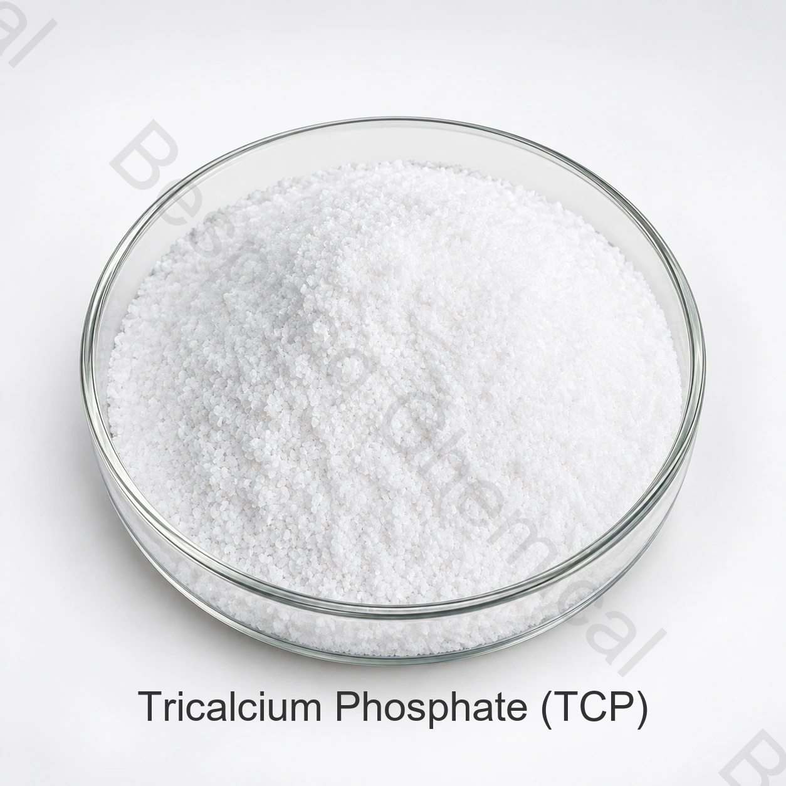

Food grade phosphate · Calcium salt · INS 341(iii)
Food Grade Tricalcium Phosphate (TCP)
Tricalcium phosphate is a practically water-insoluble calcium phosphate used in selected food systems for anticaking, buffering, stabilization and mineral-fortification purposes.
Include the food application, target specification, quantity, destination and required documents.

Reference contentTCP content ≥90.0%
Standard packing25 kg bag
Container loadingReference: 22 MT / 20' FCL
QualificationCOA and applicable certificates on request
Direct product answer
What is food grade tricalcium phosphate?
Food grade tricalcium phosphate (TCP), also called calcium phosphate tribasic or tricalcium orthophosphate, is identified as INS 341(iii). The supplied product sheet lists CAS 7758-87-4 and formula Ca3(PO4)2.
JECFA describes the commercial food additive as a variable mixture of calcium phosphates with at least the equivalent of 90% Ca3(PO4)2 on the ignited basis. Buyers should therefore qualify the offered grade against the intended standard, test method and application rather than relying on the short name alone.
Functional roles
Why is TCP used in food processing?
TCP is practically insoluble in water, so dispersion, particle size and the complete formulation can materially affect performance.
Function group 01
Anticaking and dry-flow support
JECFA recognizes tricalcium phosphate as an anticaking agent. It may help maintain flow in compatible dry foods and ingredient blends.
Dry-powder flow management
Moisture-related caking control
Premix compatibility screening
Function group 02
Buffering and mineral contribution
JECFA also lists buffering. The supplied application information identifies acidity regulation, stabilization, calcium supplementation and yeast-nutrient use.
Buffering in suitable formulations
Calcium and phosphorus contribution
Application-specific stabilization
Food application screening
Common food grade TCP applications
Legal permissions and use levels vary by food category and destination market. Validate the exact grade in the finished formulation.
Powdered foods
Evaluate anticaking performance, flow, dispersion and sensory effects in seasonings, premixes and other dry systems.
Mineral fortification
Can provide calcium and phosphorus in suitable foods, supplements and premixes after nutritional and regulatory review.
Acidity regulation
May support buffering objectives where low water solubility and mineral interactions are compatible with the formulation.
Stabilization
Screen particle size, suspension behavior, texture and storage stability in the complete food matrix.
Bakery and premixes
May be evaluated in dry bakery systems for flow, mineral enrichment and formulation-specific processing functions.
Yeast nutrient systems
The supplied information identifies yeast-nutrient use; confirm availability, dosage and process performance through trials.
Supplied technical data
Food grade TCP reference specification
The following values reproduce the product sheet supplied for this page. They are not a batch COA or a universal regulatory standard. Confirm the current signed specification and methods before approval.
White amorphous, odorless and tasteless fine powder
Tricalcium phosphate content
%
≥90.0
P2O5 content
%
38.5–48
Identification test
—
Positive color reaction
Solubility test
—
Almost insoluble in water; insoluble in ethanol; readily soluble in dilute hydrochloric acid and nitric acid
Calcium (Ca) content
%
34.0–40.0
Heavy metals (as Pb)
%
≤0.0015
Loss on ignition
%
≤8.0
Fluoride (F)
%
≤0.050
Lead (Pb)
mg/kg
≤4
Cadmium (Cd)
mg/kg
≤1
Mercury (Hg)
mg/kg
≤1
Specification boundary: Units are retained from the supplied sheet. Confirm whether results are reported on an as-is, dried or ignited basis, and compare every limit with the intended standard, contract and destination-market rules.
Qualification support
Documents and evidence to request
Product documents
Request the current specification/TDS, SDS, test methods and representative or batch certificate of analysis.
Food qualification
Request applicable HACCP, Kosher, Halal and ISO documents and verify product, site, scope, issuer and validity.
TemperatureThe supplied guidance states storage at no more than 30°C.
EnvironmentKeep bags sealed in a cool, dry, ventilated place away from sunlight, heat, humidity and contamination.
Workplace controlsFollow the current SDS and site procedures for dust control, hygiene and personal protection.
Buyer questions
Food grade TCP FAQ
What is food grade tricalcium phosphate used for?
TCP is evaluated as an anticaking agent and buffer and, in suitable products, for stabilization, acidity regulation, calcium fortification and yeast-nutrient purposes.
Is TCP soluble in water?
JECFA describes commercial tricalcium phosphate as practically insoluble in water and insoluble in ethanol, while soluble in dilute hydrochloric and nitric acids. Dispersion and particle size can therefore matter in food applications.
Is TCP the same as MCP or DCP?
No. TCP, DCP and MCP are different calcium phosphate ingredients with different calcium-to-phosphorus ratios, acidity, solubility and functional behavior.
What is the reference TCP content?
The supplied sheet states at least 90.0% TCP. JECFA similarly specifies not less than the equivalent of 90% Ca3(PO4)2 calculated on the ignited basis; confirm the contractual method.
What are the packing and minimum order?
The reference is 25 kg per bag, 22 metric tons per 20-foot container and a 500 kg minimum order. Confirm current liner, pallet and loading details.
What details are needed for a TCP quotation?
Provide the food application, target standard and specification, particle-size needs, quantity, packing, destination, required documents and delivery date.
Editorial review: Bespring Chemical technical and export team · Last reviewed 2026-07-20